Jøss‽-analysen
Dette er historien om da jeg var gjest i Andreas Wahls podcast Jøss‽ og gikk fullstendig bananas i å analysere episodene i podcasten ved hjelp av kunstig intelligens. Foruten å være gøy for alle som er interessert i tallknusing og grafer, er det også et eksempel på hvordan kombinasjonen av kunstig intelligens og programmering kan gjøre analyse av vanvittig mye tekst på kort tid, og gi ny innsikt.
Under kan du høre episoden hvor jeg forteller om analysen.
I podcasten Jøss‽ "fekter" raringer (Andreas + 2–3 gjester) om hvem som har de beste funfactene. I starten av hver episode gir hver raring sin "hook" som skal få de andre interesserte. Deretter forteller de funfacten sin etter tur, gjerne en historie på 5–10 minutter. Til slutt forsøker raringene å bli enige om hvilken funfact som vant – dvs. hvilken funfact som var mest "Jøss‽".
Jeg var med i podcasten for første gang i januar 2022. Som spirende fysikkformidler synes jeg det var veldig stort å få invitasjon fra Andreas, hvis fysikkshow og folkeopplysning jeg hadde vært megafan av lenge. Under innspilling traff jeg Andreas, Ishita Barua og tekniker Vincent Engebretsen, og i kofferten hadde jeg to finslipte funfacts.
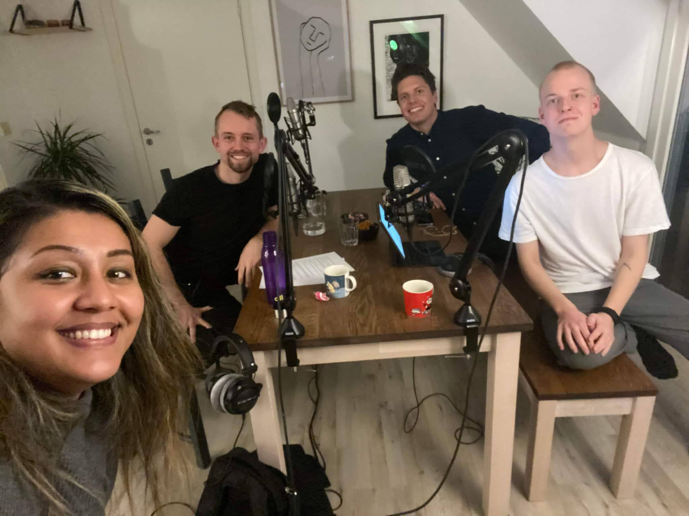
Det ble én funfact om bønder som fryser is på plantene sine for å holde dem varme om vintern, og én hvor jeg forsøkte å forklare relativitetsteorien på fem minutter. I retrospekt var kanskje sistnevnte i overkant ambisiøs, men hvis du vil være dommer, kan du høre mine to forsøk under. Podcastopptredenen ga meg etterhvert en plass i Abels tårn, og inspirasjon til å lage min egen podcast Under Kappa.
Denne gangen, i 2025, var det min tur til å invitere Andreas. Han kom til realfagbiblioteket på Blindern og vi spilte inn to episoder av Jøss og én episode av Under Kappa.
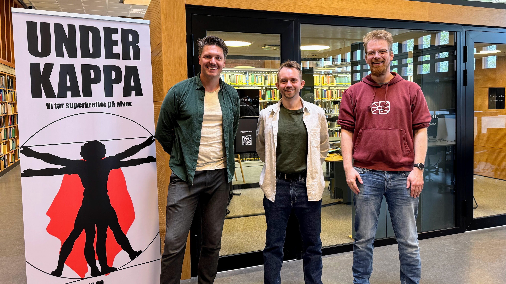
Lørdagen før innspilling brukte jeg flere timer på å laste ned alle episodene av podcasten, transkribere dem, og be ChatGPT om å gi karakter til alle episodene. Deretter gjorde jeg en omfattende dataknusing. Dette beskriver jeg i det som følger.
Metode
For å analysere episodene, lastet jeg ned alle episodene fra RSS-feeden til podcasten. Deretter transkriberte jeg episodene, og lagde et Python-skript som brukte API-et til OpenAIs modell ChatGPT 4o for å gjøre analysen. For analysen brukte jeg denne preledeteksten.
Preledetekst (klikk for å vise)
Du får et transcript fra en podcasten Jøss.
I episoden er det flere personer som forteller funfacts og konkurrere om hvem
som har den mest "jøss"-ete funfacten.
Din oppgave er å ekstrahere disse funfactene og lage en liste over dem.
I podcasten er det ulike personer som snakker.
Basert på samtalen må du assosiere hva de ulike personene heter.
Programlederen i podcasten er som oftest Andreas Wahl.
Du skal også plassere hver funfact i en kategori, her er alternativene:
Vitenskap og Teknologi: (Fysikk, kjemi, biologi, astronomi, data, oppfinnelser)
Natur og Dyr: (Zoologi, botanikk, miljø, geologi utenom ren geografi)
Historie og Samfunn: (Hendelser, personer, politikk, sosiologi, økonomi)
Kultur og Underholdning: (Kunst, musikk, film, litteratur, sport, spill, media, popkultur)
Menneskekroppen og Helse: (Anatomi, medisin, psykologi)
Språk og Kommunikasjon: (Lingvistikk, ords opprinnelse, kommunikasjonsformer)
Geografi og Steder: (Land, byer, naturformasjoner, reise)
Mat og Drikke: (Ingredienser, retter, drikkevarer, mathistorie)
Hverdagsliv og Rariteter: (Lover, statistikk, vaner, pussige fakta som ikke passer inn andre steder)
Du skal gi fire kriterier for karakteren:
Hookens Effektivitet (0–25): I starten av episoden kommer gjesten med en hook.
Hva den måler: Hvor godt fanger introduksjonen (hooken) oppmerksomheten?
Høy score: Hooken er fengende, original og gjør deg ivrig etter å høre svaret/faktaen.
Lav score: Hooken er flat, forutsigbar, forvirrende eller avslører for mye for tidlig.
Overraskelsesmoment (0–25):
Hva den måler: Hvor uventet, sjokkerende eller kontraintuitiv er informasjonen?
Høy score: Faktaen er genuint overraskende eller får deg til å revurdere noe du trodde du visste.
Lav score: Faktaen er interessant, men ikke spesielt sjokkerende.
Uvanlighet / Sjeldenhet (0–25):
Hva den måler: Hvor obskur, unik eller lite kjent er informasjonen?
Høy score: Dette er sjelden kunnskap de færreste har hørt om.
Lav score: Faktaen er relativt kjent eller dekker et vanlig tema.
Minneverdighet / Formidlingspotensial (0–25):
Hva den måler: Hvor lett er kjernen i funfacten å forstå, huske og gjenfortelle?
Høy score: Faktaen er lett å gripe, huske og dele videre.
Lav score: Faktaen er kompleks, vanskelig å huske nøyaktig, eller lite egnet for gjenfortelling.
Det er viktig at du er STRENG og bruker hele skalaen!
En helt gjennomsnittlig funfact fortjener rundt 8–10 poeng per kategori.
Ikke gi mer enn 15 poeng med mindre faktaen er genuint eksepsjonell.
De fleste fakta vil ligge i sjiktet 5–12 poeng.Slik ledeteksten viser, var jeg interessert i å samle følgende data om hver funfact:
- Navn på raring
- Kjønn på raring
-
Kategori, enten:
- Vitenskap og Teknologi (fysikk, kjemi, biologi, astronomi, data, oppfinnelser)
- Natur og Dyr (zoologi, botanikk, miljø, geologi)
- Historie og Samfunn (hendelser, personer, politikk, sosiologi, økonomi)
- Kultur og Underholdning (kunst, musikk, film, litteratur, sport, spill, media, popkultur)
- Menneskekroppen og Helse (anatomi, medisin, psykologi)
- Språk og Kommunikasjon (lingvistikk, ords opprinnelse, kommunikasjonsformer)
- Geografi og Steder (land, byer, naturformasjoner, reise)
- Mat og Drikke (ingredienser, retter, drikkevarer, mathistorie)
- Hverdagsliv og Rariteter (lover, statistikk, vaner, pussige fakta)
-
Fire karakterer à 0–25 poeng:
- Hook – Hvor effektiv var hooken
- Overraskelsesmoment – Hvor overraskende er resultatet
- Uvanlighet – Hvor uvanlig er funfacten
- Minneverdighet – Kommer man til å huske den i ettertid
- Hvorvidt funfacten vant konkurransen
- Hvorvidt det var en "underbukse"-funfact (noe med kjønnsorganer, rumpe eller sex)
Hver episode ga meg dermed en .json-fil som jeg kunne bruke for å analysere innholdet.
Innholdet ble samstilt i et stort Excel-ark.
For å beregne "vinnersjanse" for en kategori av funfact, tok jeg antall ganger en funfact av den denne kategorien har vunnet og delt på antall ganger en slik funfact har vært med.
Resultater
Det endelige Excel-arket ble et monster med 621 funfacts, med informasjon om hvem som sa hva, kjønn, tema og karakterer. Dette regnearket kommer jeg ikke til å dele, men dersom du har vært gjest i Jøss og ønsker å vite hvilken tilbakemelding og poengscore du fikk av ChatGPT, så send meg en melding på Instagram, @fysikkvidar.
Andreas, Vidar eller Even?
Siden både jeg og Even hadde vært med i podcasten tidligere, tenkte jeg å finne ut av hvem av meg og Even som hadde gjort det best tidligere.
Resultatet viser at jeg gjorde det litt bedre enn snittet, men dessverre ble jeg slått av Even – kanskje fordi han ikke gikk i fella av å prøve å forklare relativitetsteorien på fem minutter. Andreas derimot presterer under gjennomsnittet – kanskje ikke så rart når hver gjest som kommer har med seg det beste de har, mens Andreas har stilt med nesten 200 funfacts selv.
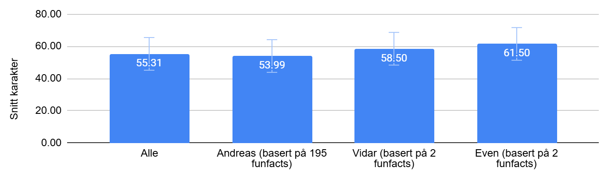
Den beste, og dårligste, funfacten
Den beste funfacten
Den beste funfacten, ifølge ChatGPT, ble fortalt av Eldrid Borgan i episode 66 – Forlenget klitoris, telefon i rumpa, og vennskapsparadokset.
Vennskapsparadokset: De fleste av oss vil oppleve at vennene våre er mer populære enn oss selv, også selv om vi ikke er mindre populære enn snittet.
Den dårligste funfacten
Jeg hadde ikke delt hvem som havnet på sisteplass, hvis det ikke var for at det var Andreas selv som var så uheldig å havne på den plassen. Denne ble fortalt i episode 94 – Språkstopp, evige spor, og en ode til fitta.
Spor av menneskelig tilstedeværelse i geologien: Fysiske spor etter menneskelig aktivitet kan bli bevart i millioner, kanskje milliarder, av år i jordens geologiske lag.
Utvikling over tid
Hvordan har funfactene utviklet seg over tid? For å finne ut av det plottet jeg karakterene de ulike funfactene fikk som funksjon av episodenummer.
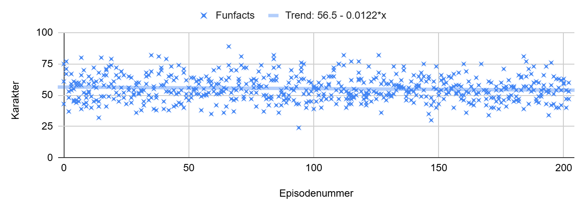
Som vi ser, har nivået vært veldig uvariabelt – liten trend. Om noe, er det en bitteliten negativ trend, hvor karakterene går ned med 0,0122 per episode. Hvis vi ekstrapolerer videre, konkluderer vi med at ved ca. episode 5000 vil funfactene være bånn i bøtta – men da er det kanskje på tide å gi seg uansett?
Er menn bedre enn kvinner til å fortelle funfacts?
Ifølge analysen har det blitt fortalt 411 funfacts av menn, og 209 funfacts av kvinner. Siden Andreas selv er mann, og det er to gjester i hver episode, tyder det på at det i snitt har blitt invitert omtrent like mange menn og kvinner som gjester. Klapp klapp.
Dessverre for oss menn, ser det ut til at kvinnene slår oss i alle kategoriene, og ender opp med et snitt på 57,1 poeng mot våre 54,4.
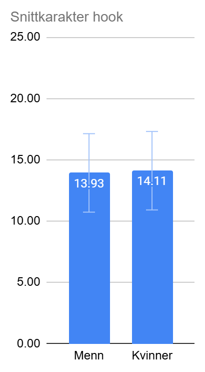
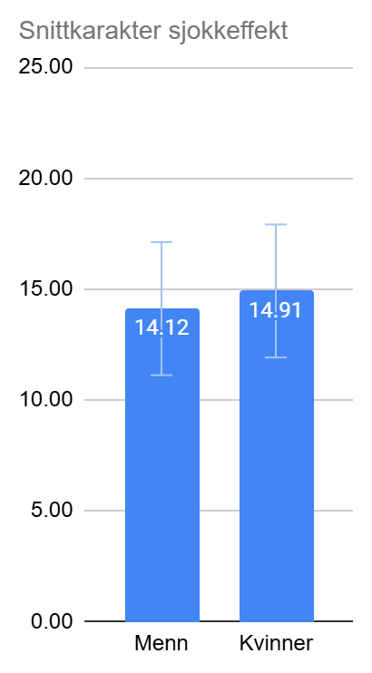
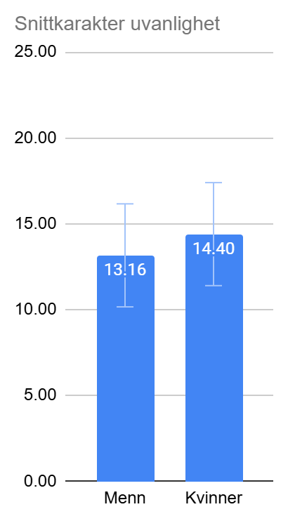
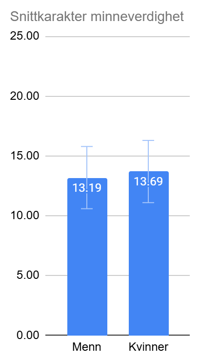
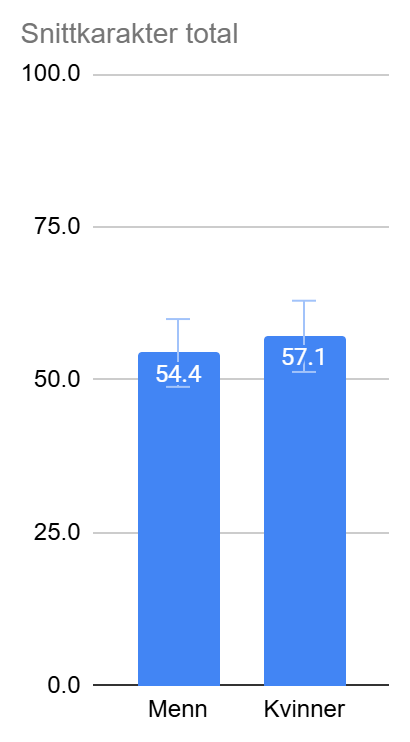
Gjelder det å fortelle først eller sist?
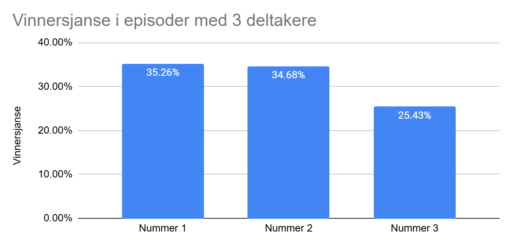
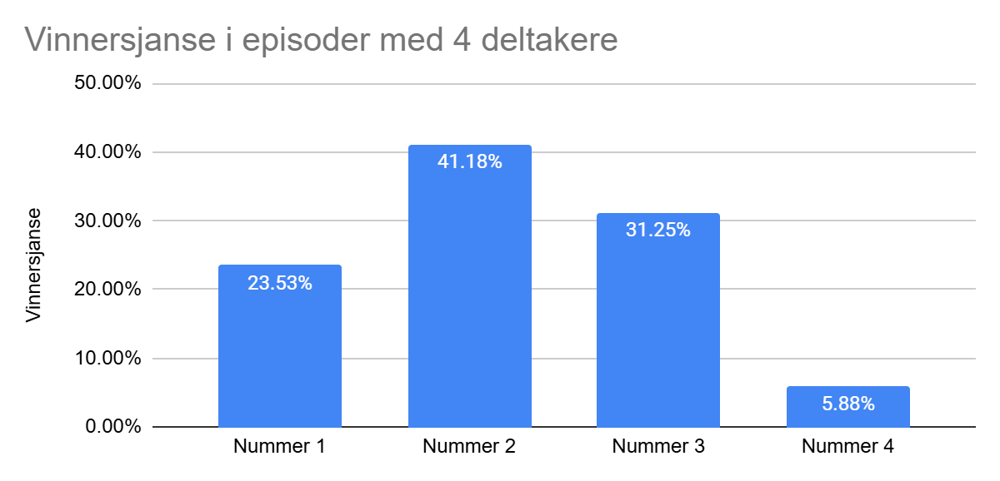
Det kan tyde på at det å gå sist, sjeldent er en god strategi, spesielt ikke hvis man er fire! Slik jeg ser det, er det to måter å forklare dette på. For det første, siden raringene starter episoden med å presentere en hook hver, er det ikke usannsynlig at den minst spennende funfacten blir tatt sist og dermed vinner sjeldnere. For det andre kan det hende at det er akkurat nok plass i hodet til tre funfacts og at den første av disse har fått tid til å modne godt.
Her må det dog nevnes, at noe av det ChatGPT er dårligst på, er å si i hvilken rekkefølge funfactene ble fortalt. Dermed må denne delen tas med en ekstra klype salt.
Hvilken kategori er best?
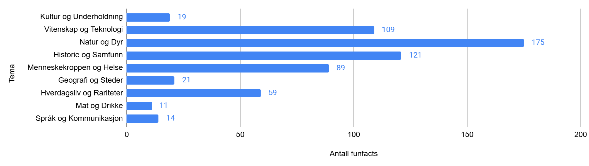
Men hvilken kategori er det lettest å vinne i?
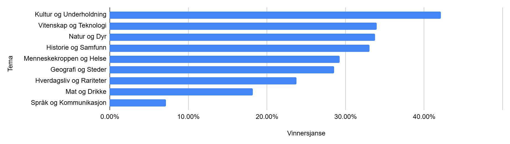
Hjelper det med underbukse-funfact?
En vanlig gjentatt påstand i Jøss er at det hjelper med underbukse-funfact, altså en funfact som involverer kjønn, rumpe eller sex. Figurene under viser hvor mange funfacts det var i de ulike kategoriene vinnende/tapende og underbukse/ikke for tre og fire gjester.
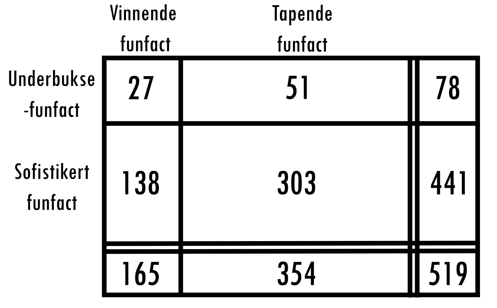
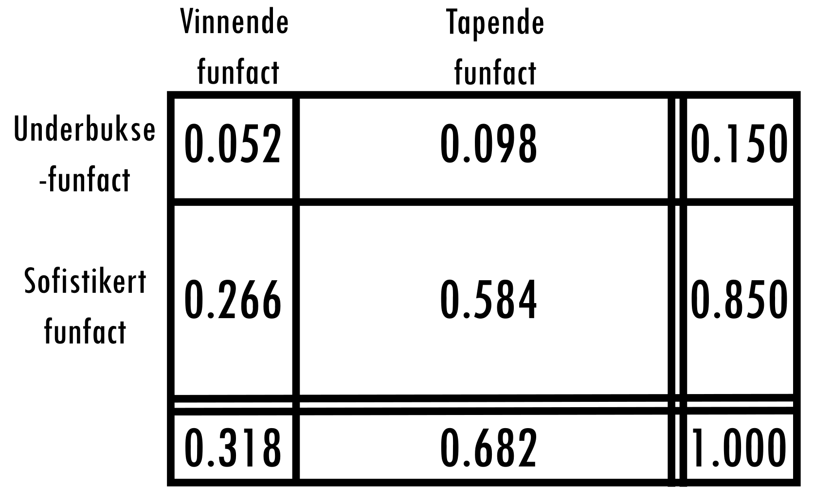
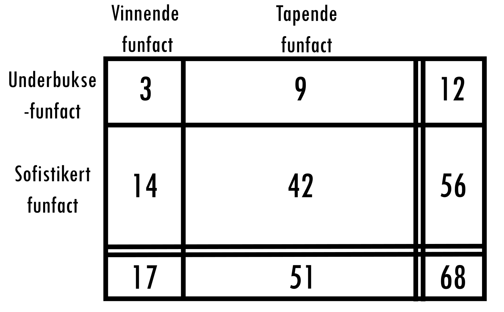
Som vi ser er det litt under 1/3 sjanse for å vinne når det er 3 deltakere. Grunnen er at det ikke alltid kåres en vinner, og at ChatGPT kan ha gjort feil i analysen. Det vi lurer på er hva sjansen for å vinne er gitt at du går for en underbukse-funfact, sammenliknet med sjansen for å vinne gitt at du går for en sofistikert funfact.
I en episode med 3 deltakere: sjansen for å vinne er ca. 3 prosentpoeng høyere med underbukse-funfact. I episoder med fire deltakere er det ingen forskjell.
Er ChatGPT enig i vinneren?
I de to siste delene av analysen, ønsket jeg å se litt på troverdigheten i analysen. Det første man kan gjøre er å se om det er korrelasjon mellom hvilken poengscore en funfact fikk, og hvor stor sjanse den hadde for å vinne.
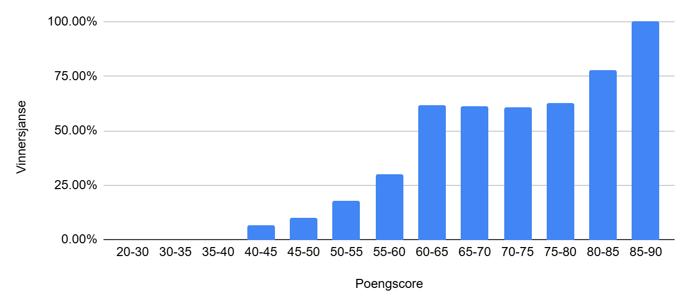
Det må dog nevnes at ChatGPT har gitt karakterscore basert på hele transkripsjonen av samtalen. En av konsekvensene med dette, er at språkmodellen tar inn diskusjonen som kom etter analysen – hvor deltakerne i podcasten diskuterer hvilken funfact som bør vinne. Dersom en funfact omtales i hyggelige ordlag her, er det naturlig at den blir inspirert til å gi den historien en god score.
Er ChatGPT enig med seg selv?
Slik jeg nevnte innledningsvis, skal vi ta denne analysen med en god mengde NaCl. Men selv om vi kunne stolt på at ChatGPT hadde full oversikt over hvem som sa hva hele tiden – kan vi stole på vurderingen av kvalitetene til funfactene? Sagt på en annen måte – dersom jeg kjører analysen én gang til, matcher poengsummene?
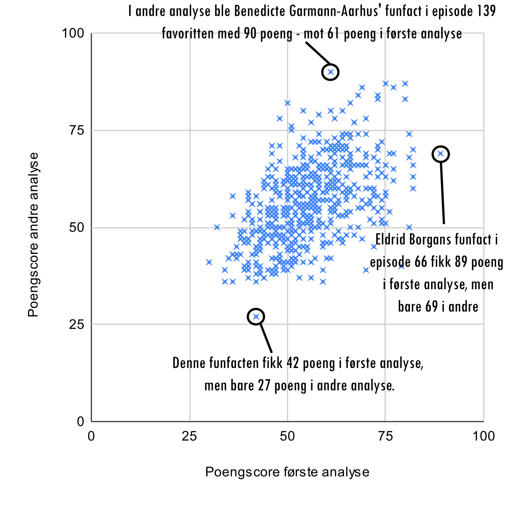
Vi ser at ChatGPT er langt fra å være konsekvent, selv om det finnes en trend i dataene. For eksempel ser vi at den beste funfacten i første omgang, nemlig Eldrid Borgans funfact om vennskapsparadokset, kun fikk 69 poeng i andre analyse. Og Benedicte Garman-Aarhus fikk kun 61 poeng i første analyse, men vant soleklart i andre.
Betyr dette at man ikke kan stole på ChatGPTs analyse av data? Jeg tror det betyr to ting: for det første handler det om at språkmodeller er best på kvalitative oppgaver – analysere meningsinnholdet i tekster – og mindre gode på kvantitative oppgaver som å gi poeng. For det andre er gjestene i Jøss som regel hentet inn fordi de allerede er gode formidlere som vet å snakke om funfacts. Dermed er det lite "strekk i laget," og jeg tror det ville vært svært vanskelig selv for et menneske å objektivt sette karakterer på disse. I mer realistiske situasjoner, som f.eks. skoleeksamener, ville det vært mye mer spredning og kanskje enklere for ChatGPT å være konsekvent.
Konklusjon
Så, hva sitter jeg igjen med etter å ha gått fullstendig bananas med KI-analyse på hele Jøss‽-arkivet?
Noen mønstre dukket jo opp: Kvinnene ser ut til å slå oss menn jevnt over, kultur-funfacts er tilsynelatende den beste strategien, og å melde seg frivillig til å gå sist? Kanskje ikke så lurt, spesielt hvis dere er fire.
Det er jo ingen tvil om at KI er et kraftig verktøy for å tygge seg gjennom vanvittige mengder tekst – som 621 funfacts fordelt på årevis med podcast – og finne ting man ellers ville brukt evigheter på manuelt.
Allikevel hadde KI-en litt problemer med å være konsekvent i sin kvantitative analyse. Og det er kanskje ikke så rart, for Jøss‽ handler jo egentlig om mye mer enn poeng og kategorier. Det handler om formidlingsgleden til raringene, den gode historien, latteren – ting som en språkmodell nok ikke klarer å fange helt ennå, uansett hvor fancy den er.
Men forhåpentligvis var denne tallknuse-bonanzaen gøy lesning og ga et litt annerledes blikk på denne rare podcasten. Jakten på den perfekte funfacten fortsetter – både for meg og forhåpentligvis for Andreas og andre raringer i mange episoder til!
Databehandling
Et vanlig rammeverk for å vurdere behovet for beskyttelse av data er en fargekoding av data, se f.eks. UiOs retningslinjer. Her går graderingen fra grønn (åpen informasjon), gul (intern informasjon), rød (konfidensiell informasjon) og til sort (strengt konfidensiell informasjon).
I dette prosjektet, hvor jeg analyserer innhold fra podcasten "Jøss", er råmaterialet (lydopptakene) offentlig tilgjengelig via åpne podcast-plattformer. Alle som deltar i podcasten er klar over at deres stemmer og uttalelser blir publisert og gjort tilgjengelig for allmennheten. Slikt kan man argumentere for at det er snakk om grønn data.
Det til tross, har podcasten en diskursform som er personlig og deltakere vil raskt kunne dele personlig informasjon. I tillegg, ved å generere transkripsjoner av episodene kan man bidra til å gjøre denne informasjonen mer tilgjengelig. Derfor har jeg valgt i denne analysen å holde meg til tjenester hvor dataen ikke blir permanent lagret på noen servere.
- Innhenting
- Lydfilene fra podcast-episodene ble lastet ned direkte til min private, lokale datamaskin for å ha kontroll på hvor rådataene befant seg.
- Transkribering med Autotekst
- For å omdanne lyd til tekst, benyttet jeg tjenesten Autotekst, som driftes av Universitetet i Oslo. Lydfilene ble lastet opp til denne tjenesten for automatisk transkribering. Autotekst kjører på UiOs egne servere lokalisert i Norge, og tjenesten sletter de opplastede lydfilene umiddelbart etter at transkripsjonen er fullført.
- Analyse via OpenAI API
-
Selve analysen av tekstdataene (transkripsjonene) ble utført ved hjelp av OpenAIs språkmodeller
via deres API. Ved bruk av dette API-et gjelder følgende retningslinjer:
- Data sendt inn via API-et brukes ikke til å trene OpenAIs modeller.
- Dataene blir ikke gjennomgått manuelt av ansatte hos OpenAI. Tilgang for mennesker er strengt begrenset og skjer kun unntaksvis for å etterforske mulig misbruk, overholde lovpålagte krav eller løse tekniske/sikkerhetsmessige problemer.
- Dataene lagres midlertidig i maksimalt 30 dager, primært for å overvåke misbruk og av juridiske hensyn, før de slettes permanent fra deres systemer.
Etter analysen har jeg slettet alle lydfiler og transkripsjoner og beholdt kun et Excel-ark med oversikten. I denne artikkelen har jeg kun delt aggregerte resultater og gir informasjon til deltakere kun på forespørsel av dem selv.